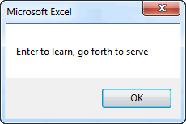
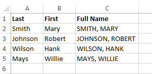

Using String Functions
A string is a sequence of one or more text characters. A string constant is a sequence of characters in code delimited by double quotes ("Hello world"). A string variable is a variable used to store text. String variables are dynamically allocated to accommodate the amount of text you store in each string. They can hold up to two billion characters!
Concatenation
Recall that we can combine (concatenate) two or more strings using the & operator. For example, the code:
Dim str1 As String, str2 As String
str1 = "Enter to learn"
str2 = "go forth to serve"
MsgBox str1 & ", " & str2
Would produce:

Note that this example involves both string variables (str1, str2) and string constants (", ").
String Functions
In many cases, we need to manipulate string constants and variables. VB provides a rich suite of functions for manipulating strings. Some of the more widely used string functions are as follows:
| Function | Description | Example | Result |
|---|---|---|---|
| Left(str, numchar) | Extracts the specified number of characters from the left side of the string str. | mystr = Left("Hello World", 5) | "Hello" |
| Right(str, numchar) | Extracts the specified number of characters from the right side of the string str. | mystr = Right("Hello World", 5) | "World" |
| Mid(str, startchar, [numchar]) | Extracts a string of length numchar from the middle of str, starting at startchar. If numchar is omitted, the entire right-hand portion of the string, beginning at startchar, is extracted. | mystr = Mid("Hello World", 7, 1) mystr = Mid("Hello World", 7) |
"W" "World" |
| Len(str) | Returns the length of str. | n = Len("Hello World") | 11 |
| UCase(str) | Converts the string to all uppercase characters. | mystr = UCase("Hello World") | "HELLO WORLD" |
| LCase(str) | Converts the string to all lowercase characters. | mystr = LCase("Hello World") | "hello world" |
| LTrim(str) | Returns a copy of the string without leading spaces | mystr = LTrim(" Hello ") | "Hello " |
| RTrim(str) | Returns a copy of the string without trailing spaces | mystr = RTrim(" Hello ") | " Hello" |
| Trim(str) | Returns a copy of the string without leading or trailing spaces | mystr = Trim(" Hello ") | "Hello" |
| StrReverse(str) | Returns a copy of the string in reverse order | mystr = StrReverse("Hello World") | "dlroW olleH" |
| Replace(expression, find, replace, [start], [count], [compare]) | Replaces each instance of "find" with "replace" in "expression". | mystr = Replace("Hello World", "Hello", "Goodbye") mystr = Replace("Hello World", "l", "") mystr = Replace("Hello World", "o", "", 1, 1) mystr = Replace("Hello World", "o", "", 1) mystr = Replace("Hello World", "l", "", 6) |
"Goodbye World" "Heo Word" "Hell World" "Hell Wrld" "Hello Word" |
| InStr([start], string1, string2, [compare]) | Returns an integer representing the position of string2 inside string1. Start is an optional starting location (if omitted, search starts at position 1). If string2 is not found in string1, the function returns zero. | n = InStr(1, "Hello World", "W") n = InStr(1, "Hello World", "N") |
7 0 |
| StrConv(string, conversion, [LCID]) | Returns a copy of string after modifying the string based on the conversion argument. The conversion argument should be a vb constant with options including vbUpperCase, vbLowerCase, vbProperCase. | mystr = StrConv("Hello World", vbUpperCase) mystr = StrConv("Hello World", vbLowerCase) mystr = StrConv("hello world", vbProperCase) |
HELLO WORLD hello world Hello World |
These functions can be combined in creative ways to achieve a variety of results. For example, consider the following table:

Suppose we wanted to populate the third column with full names. We could do that with the following code:
Dim first As String
Dim last As String
Dim full As String
For myrow = 2 To 5
first = Cells(myrow, 2)
last = Cells(myrow, 1)
full = first & " " & last
Cells(myrow, 3) = full
Next myrow
Resulting in:

If we wanted the full name to be "last, first" format, we could restructure our code as follows:
For myrow = 2 To 5
first = Cells(myrow, 2)
last = Cells(myrow, 1)
full = last & ", " & first
Cells(myrow, 3) = full
Next myrow
Resulting in:

Now suppose we wanted the full name to be in all caps and we want to ensure that all leading and trailing spaces (if any) are removed. We could add references to string functions as follows:
For myrow = 2 To 5
first = Cells(myrow, 2)
last = Cells(myrow, 1)
full = UCase(Trim(last) & ", " & Trim(first))
Cells(myrow, 3) = full
Next myrow
Resulting in:

Sample Code
The workbook associated with the examples on this page can be downloaded here:
Exercises
You may wish to complete following exercises to gain practice with and reinforce the topics covered in this chapter: